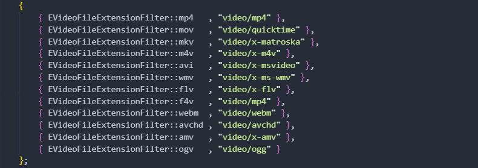
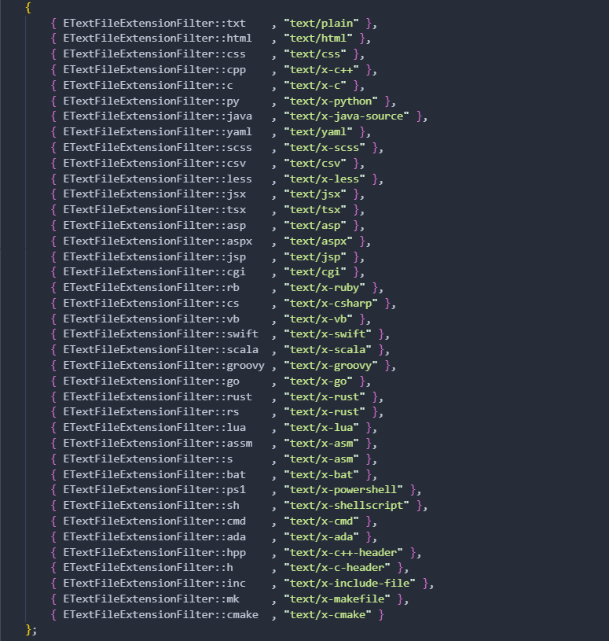
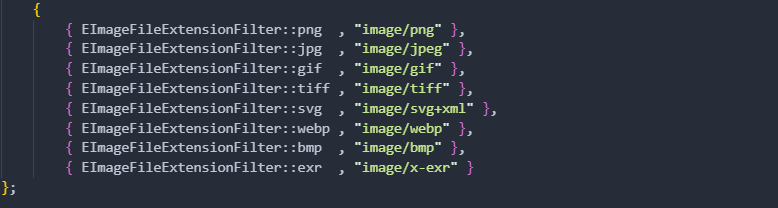
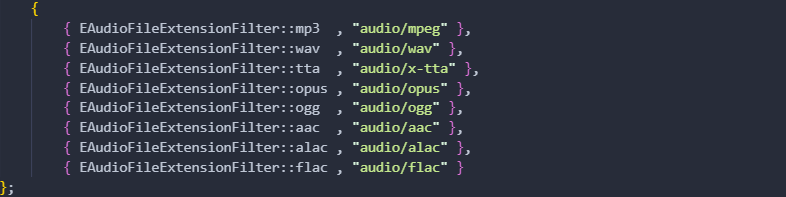
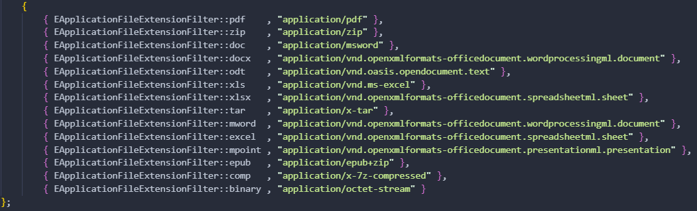
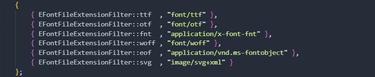
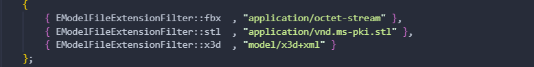

Supported Filters
ANFP supports all file types by default, and the Full version gives you powerful control over what users can pick. You can apply filters based on general file type categories (like images, videos, audio, etc.) or define specific file extensions to precisely target the formats you want.
this page shows you all the available file types that you can filter. Once you apply a file type as a filter, all other files become inaccessible.
Video:
mp4, mov, mkv, m4v, avi, wmv, flv, f4v, webm, avchd, amv, ogv
Text:
txt, html, css, C++, C, py, java, yml, scss, csv, less, jsx, tsx, asp, aspx, jsp, cgi, rb, cs, vb, swift, scala, groovi, go, rust, rs, lua, assm, s, bat, ps1, sh, cmd, ada, hpp, h, inc, mk, cmake
Image:
png, jpeg, gif, tiff, svg, webp, bmp, exr
Audio:
mp3, wav, tta, opus, ogg, aac, alac, flac
Application:
pdf, zip, doc, docx, odt, xls, xlsx, tar, mword, excel, mpoint, epub, comp, binary
Font:
ttf, otf, fnt, woff, eof, svg
3d Model:
fbx, stl, x3d
